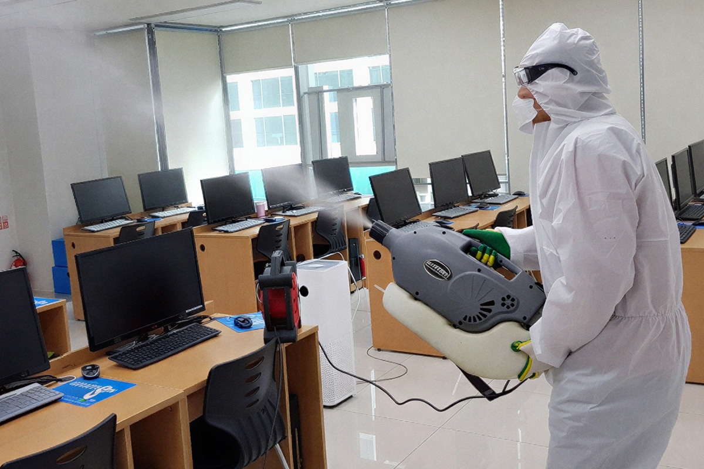
최신 작업 동영상
학교방역하러 다녀왔습니다~!
그린죤 작업 영상들

학교 연못 청소 작업 영상
학교 방역하러 다녀왔습니다~!
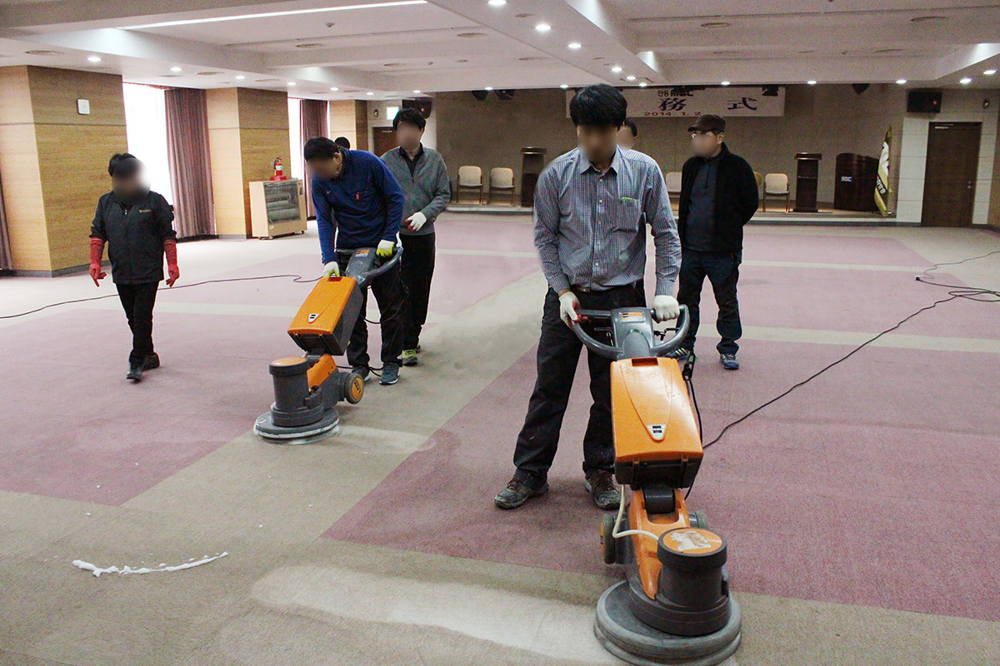
(주)그린죤 카페트청소 작업
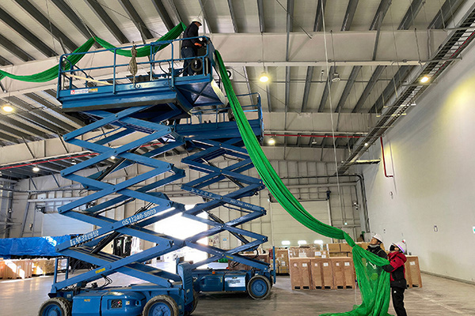
비둘기 퇴치 작업 다녀왔습니다~!

식당 후드 청소 다녀왔습니다!

공장 바닥 청소 작업
공장 설비 청소 작업
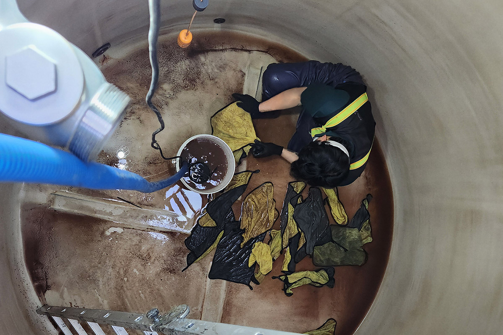
저수조 내부 청소 작업
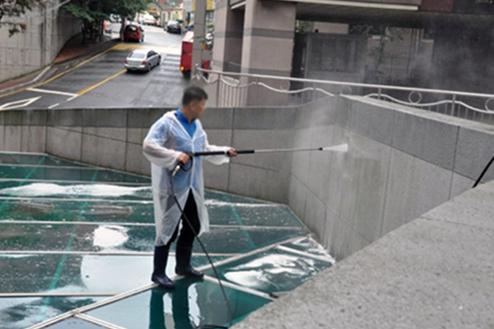
외벽 세척 작업
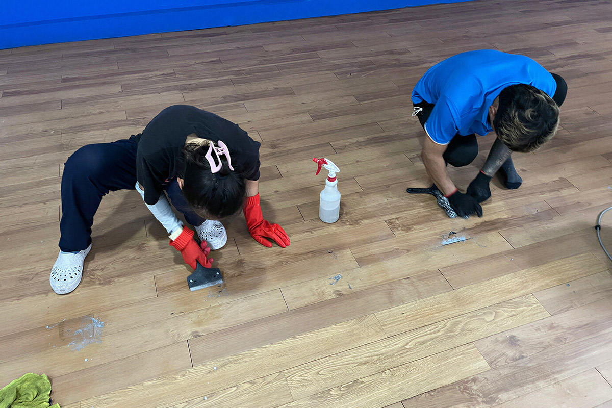
바닥 왁스 코팅 작업
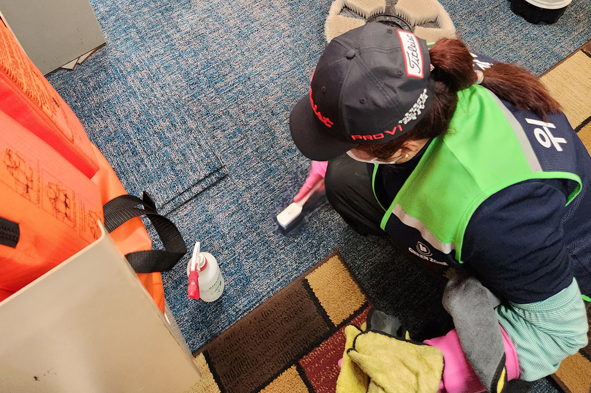
카펫 청소 작업

시설물 세척 작업
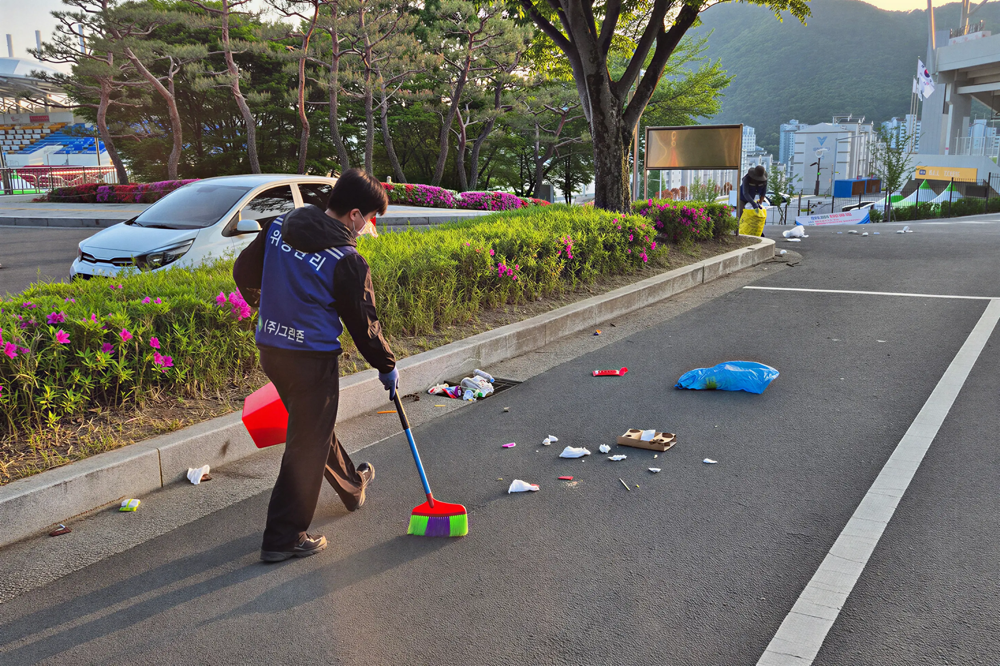
행사장 청소 작업
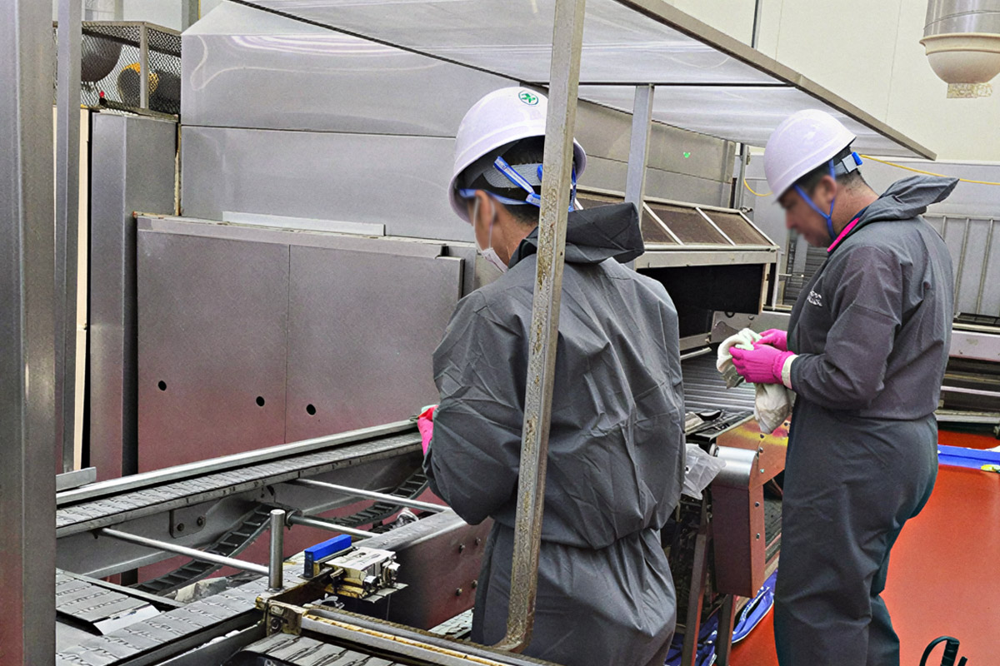
공장 라인 가동 전 정밀 세척 과정
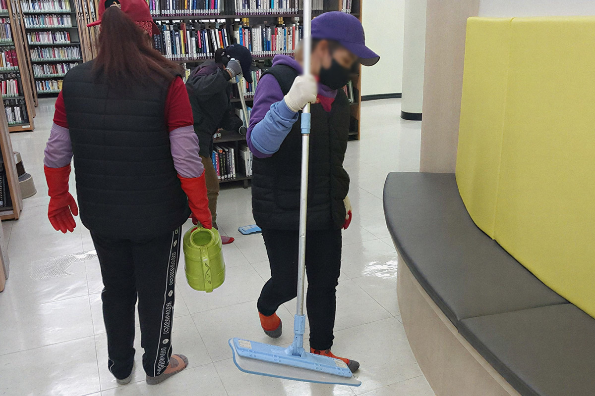
사무실 바닥 세척과 왁스 코팅 과정
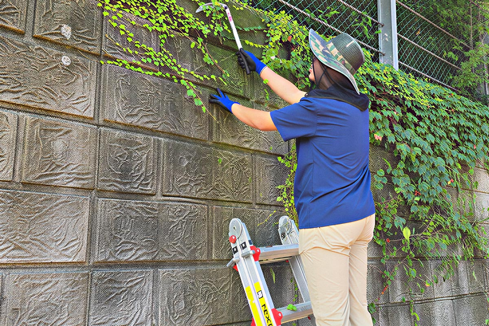
건물 유리창과 창틀 세척 작업
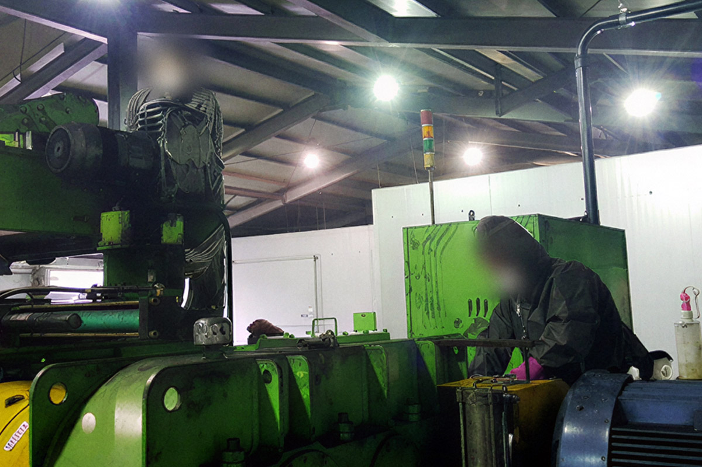